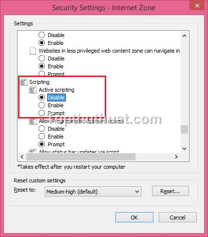

Kích hoạt và vô hiệu hóa JavaScript trên Chrome
Trước tiên,
bạn cần mở trình duyệt Google Chrome >>
Cài đặt
Tại giao
diện cài đặt, bạn kéo xuống phía dưới.
Bạn chọn Hiển thị cài đặt nâng cao...
Bạn tìm
đến phần Bảo mât >> Cài đặt nội
dung để thực hiện tắt JavaScript trình
duyệt.
Tại giao
diện tiếp theo, bạn tìm đến mục JavaScript
>> Không cho phép bất ký trang Web nào chạy javascript.
Lưu ý: Nếu bạn muốn bật
Javascitp, bạn có thể thực hiện tương
tự nhưng bạn sẽ chọn Cho phép tất
cả....
Bật và tắt Javascript trên trình duyêt Firefox
Đầu tiên,
bạn cần mở Firefox lên. Tại giao diện chính,
bạn nhập: about:config vào thanh địa
chỉ của Firefox.
Và chọn Tôi
sẽ cẫn thân. Tôi hữa!
Tại giao
diện Config của Firefox, bạn nhập: javascript.enabled vào
ô tìm kiếm
Khi đó, bạn
chọn chuột phải vào Javascritp:enabled >>
Bật-Tắt. Bạn sẽ để ý đến giá
trị True (Javascript bật) hoặc False (Javascript tắt).
Cách bật và tắt Javascript trên trình duyệt IE
Trước tiên,
bạn cần vào cài đặt của IE >> Internet
Options.
Tại giao
diện cài đặt Internet Options >> Security
>> Custom Level để thực hiện thay
đổi thiết lập
Tại giao
diện Security Setting, bạn hãy tìm đến mục Scripting>>
Active Scripting. Để tắt tính năng JavaScript,
bạn chọn Disable. Và ngược lại
